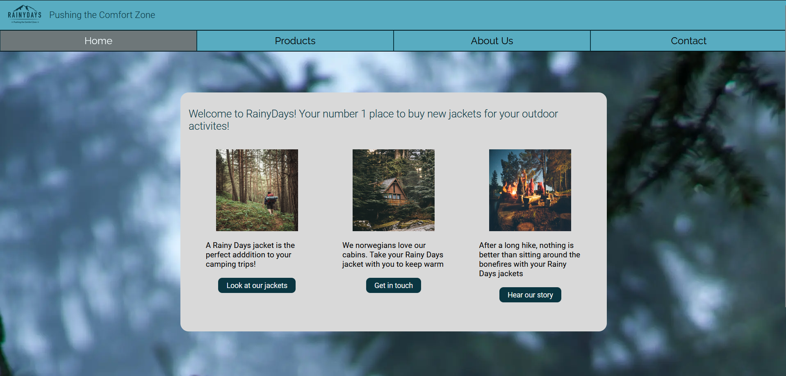
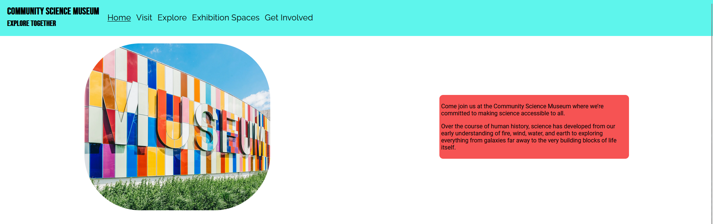
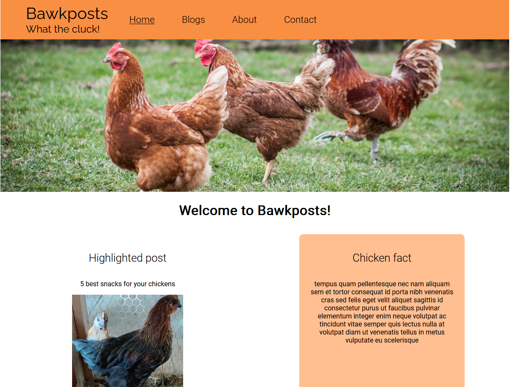

Welcome to my portfolio site!
About me
Hello! My name is Sander and I have a huge passion for technology. I want to create new websites, focusing on clean code and ease of use. Outside of coding, you'll find me playing video games, listening to music or haning around animals.
Portfolio
Rainy Days cross course project
This was my cross course project. The task was initally to make a design in Figma. I chose Rainy Days theme. An online shop selling rain jackets for men and women aged 30-50 whos interested in outdoor activities. Then we had to build the site in HTML and CSS. After that we had to make improvements to it by asking for feedback. Finally we used a headless WordPress installation to show the products. This is currently not implemented in this version, as the WP instalation is local.
Link to GitHub repository Link to deployed siteSemester Project 1 - Community Science Museum
This was my first semester project. The page we had to design was for Community Science Museum. A newly opened museum in my city, catered to young kids and families with kids. The site is built purely in HTML and CSS.
Link to GitHub repository Link to deployed siteProject Exam 1 - Bawkposts
This was my first project exam. The task at hand was to create a blog site. Theme was open, so I chose chickens. The site is built using HTML and CSS, while the posts are made in WordPress and fetched using JS.
Link to GitHub repository Link to deployed site